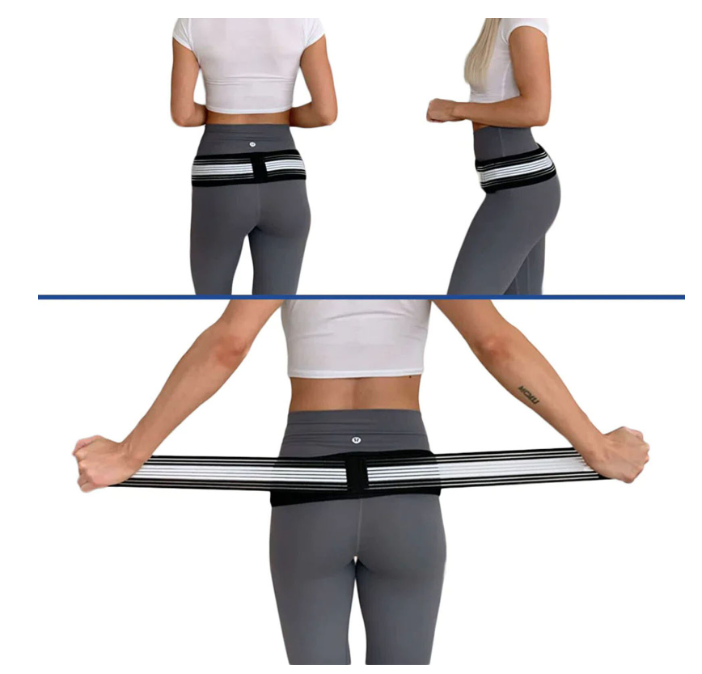

Centură de Susținere pentru Bazin și Șolduri
Centură reglabilă de susținere pentru bazin și șolduri, cu benzi elastice de compresie ajustabilă pentru utilizare cotidiană și activități fizice compatibile.
Prețul și stocul sunt afișate conform catalogului furnizat. Confirmă disponibilitatea, cantitatea și condițiile comerciale înainte de comandă.
DETALII PRODUS
Descriere
Centura reglabilă de susținere pentru bazin și șolduri este un accesoriu ergonomic conceput pentru a oferi compresie și stabilitate în regiunea pelviană, prin intermediul unui sistem de benzi elastice ajustabile. Produsul se poziționează în jurul bazinului, fiind destinat persoanelor care doresc un nivel suplimentar de susținere în timpul activităților cotidiene și al mișcărilor obișnuite.
Designul cu benzi de tensionare permite ajustarea individuală a nivelului de compresie, oferind posibilitatea adaptării centurii la conformația utilizatorului. Construcția sa compactă facilitează purtarea în jurul șoldurilor, fără a necesita acoperirea întregii regiuni lombare.
Cum funcționează sistemul de susținere?
Centura utilizează un mecanism de fixare în jurul bazinului, completat de benzi elastice care permit modificarea tensiunii aplicate asupra zonei susținute.
Principiul de funcționare se bazează pe aplicarea unei compresii externe controlate, distribuită în regiunea inferioară a trunchiului.
Sistemul permite:
- Susținere pelviană: oferă compresie în jurul bazinului și al șoldurilor.
- Ajustare individuală: benzile elastice permit modificarea nivelului de strângere.
- Fixare în jurul corpului: construcția urmărește conturul regiunii pelviene.
- Stabilitate în timpul mișcării: sistemul de prindere contribuie la menținerea centurii în poziția aleasă.
- Mobilitate: designul îngust lasă liberă o mare parte a abdomenului și a regiunii lombare.
Construcție cu benzi elastice de tensionare
Elementul distinctiv al centurii este sistemul de benzi extensibile, conceput pentru a permite ajustarea compresiei în funcție de necesitățile individuale.
Benzile sunt dispuse în jurul regiunii pelviene și pot fi tensionate pentru obținerea unei fixări mai ferme.
Materialul flexibil permite adaptarea la mișcările obișnuite ale corpului, în timp ce structura centurii urmărește menținerea contactului în zona bazinului.
Sistemul de reglare reprezintă un avantaj practic pentru utilizatorii care doresc să modifice nivelul de susținere fără utilizarea unor accesorii suplimentare.
Design ergonomic pentru regiunea inferioară a spatelui și șolduri
Spre deosebire de centurile lombare clasice, care acoperă o suprafață mare a spatelui, acest model este conceput pentru poziționarea mai joasă, în jurul bazinului.
Această configurație permite aplicarea compresiei în regiunea pelviană și în zona inferioară a trunchiului.
Profilul relativ îngust facilitează integrarea produsului în activitățile zilnice, iar sistemul reglabil contribuie la adaptarea acestuia la diferite conformații corporale.
Culoarea neagră, completată de elemente contrastante deschise, oferă centurii un aspect discret și funcțional.
Situații în care poate fi utilizată
Centura poate fi folosită în contexte în care este necesară susținerea mecanică a regiunii pelviene, cu respectarea recomandărilor producătorului și a particularităților individuale.
În activitățile cotidiene
Poate oferi susținere suplimentară persoanelor care desfășoară activități ce presupun deplasări și schimbări frecvente ale poziției corpului.
În timpul mersului
Construcția compactă permite integrarea centurii în activități de mobilitate obișnuită, fără imobilizarea completă a șoldurilor.
În exerciții fizice ușoare
Poate fi utilizată în anumite exerciții compatibile cu purtarea unui suport pelvian, atunci când acest lucru este adecvat.
Pentru susținere localizată
Sistemul de tensionare permite ajustarea compresiei în regiunea bazinului, în funcție de confortul și necesitățile utilizatorului.
Caracteristici tehnice și funcționale
- Tip produs: centură de susținere pelviană.
- Destinație: susținerea regiunii bazinului și a șoldurilor.
- Zonă de aplicare: regiunea pelviană și partea inferioară a trunchiului.
- Funcție principală: compresie și susținere mecanică.
- Sistem de ajustare: benzi elastice reglabile.
- Tip construcție: centură cu sistem de tensionare.
- Material: structură textilă flexibilă cu elemente elastice.
- Fixare: în jurul bazinului.
- Compresie: ajustabilă individual.
- Design: ergonomic, cu profil relativ îngust.
- Culoare predominantă: negru.
- Elemente vizuale: benzi contrastante deschise.
- Mobilitate: permite realizarea mișcărilor compatibile cu utilizarea produsului.
- Utilizare: activități cotidiene și exerciții fizice adecvate.
- Aplicare: poziționare în jurul regiunii pelviene și ajustare manuală.
- Îndepărtare: prin eliberarea sistemului de fixare.
- Întreținere: conform recomandărilor producătorului.
- Caracter reutilizabil: concepută pentru utilizări repetate.
- Alimentare electrică: nu necesită.
- Dimensiuni: de confirmat conform specificațiilor furnizorului.
Comandă și informații
Site-ul funcționează în regim de catalog B2B. Nu există plată online sau coș de cumpărături.
Discută pe WhatsApp →DIN ACEEAȘI CATEGORIE